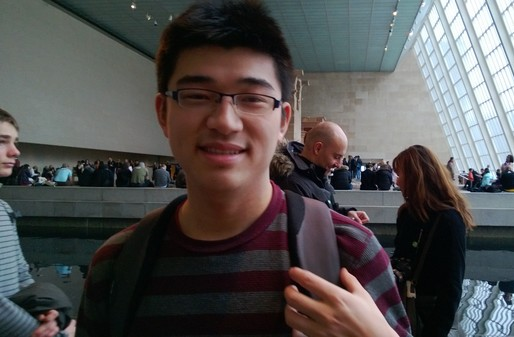

|

|
Chenyou Fan
Ph.D.
Contact
fanchenyou-at-gmail.com
|
I obtained my Ph.D. degree of Computer Science from School of Informatics and Computing, Indiana University.
My research topics include first-person videos, image captioning, video question answering, federated learning and time series analysis.
Google Scholar here
Research
I work in computer vision, machine learning and natural language understanding, where the areas in AI concerned with automatically perceiving the world from human perspectives.
More generally, I am interested and actively involved in solving problems by modeling and learning from large amounts of unstructured data such as images and texts, with a large number of agents and distributed devices.
Publications
- Chenyou Fan, Jianwei Huang. "Federated Few-Shot Learning with Adversarial
Learning."
19th International Symposium on Modeling and Optimization in Mobile, Ad Hoc, and Wireless Networks (WiOpt '21)
[pdf]
- Chenyou Fan, Junjie Hu, Jianwei Huang. "Few-Shot Multi-Agent Perception."
29th ACM International Conference on Multimedia 2021 (ACM MM'21, 27.9% acceptance rate)
[pdf]
[code]
- Tianyi Lin, Chenyou Fan (co-first), Nhat Ho, Marco Cuturi, Michael I. Jordan. "Projection Robust Wasserstein Distance and Riemannian Optimization."
Conference on Neural Information Processing Systems (NeurIPS'20, spotlight, 20% acceptance rate, 3% spotlight rate)
[pdf]
[code]
- Tianyi Lin, Chenyou Fan, Mengdi Wang, M.I.Jordan. "Improved Sample Complexity for Stochastic Compositional Variance Reduced Gradient."
American Control Conference 2020 (ACC'20)
[pdf]
- Chenyou Fan, Heng Huang. "Heterogeneous Memory Enhanced Multimodal Attention Model for Video Question Answering."
IEEE Conference on Computer Vision and Pattern Recognition 2019 (CVPR'19, 25.2% acceptance rate)
[pdf]
[code]
- Chenyou Fan, Heng Huang. "Multi-Horizon Time Series Forecasting with Temporal Attention Learning."
SIGKDD Conference on Knowledge Discovery and Data Mining 2019 (KDD'19, 20% acceptance rate)
- Chenyou Fan, Zehua Zhang, David J. Crandall. "DeepDiary: Lifelogging Image Captioning and Summarization." 2018. Journal of Visual Communication and Image Representation.
[link]
- Mingze Xu, Chenyou Fan, Yuchen Wang, Michael S. Ryoo, David J. Crandall. "Joint Person Segmentation and Identification in Synchronized First-and Third-person Videos."
European Conference on Computer Vision 2018 (ECCV'18).
[project]
- Mingze Xu, Chenyou Fan, John Paden, Geoffrey Fox, and David J. Crandall. "Multi-Task Spatiotemporal Neural Networks for Structured Surface Reconstruction."
IEEE Winter Conference on Applications of Computer Vision 2018 (WACV’18).
[pdf]
- Chenyou Fan, Jangwon Lee, Mingze Xu, K.K. Singh, Y.J. Lee, David J. Crandall, Michael S. Ryoo, "Identifying first-person camera wearers in third-person videos",
IEEE Conference on Computer Vision and Pattern Recognition 2017 (CVPR'17, 29.0% acceptance rate). [pdf]
[data & project page]
- AJ Piergiovanni, Chenyou Fan, and Michael S. Ryoo, "Learning Latent Sub-events in Activity Videos Using Temporal Attention Filters",
the 31st AAAI Conference on Artificial Intelligence (AAAI), February 2017.
[pdf]
[source_code]
Resources
- Chenyou Fan. "Survey of Convolutional Neural Network"
pdf
More research work
- Hengyang Lu, Chenyou Fan. "Few-shot COVID-19 Rumor Detection for Online Social Media."
CCF Conference on Artificial Intelligence (CCFAI'21)
- Chenyou Fan, Ping Liu. "Federated Generative Adversarial Learning."
Chinese Conference on Pattern Recognition and Computer Vision (PRCV'20)
[pdf]
- Chenyou Fan. "EgoVQA - An Egocentric Video Question Answering Benchmark Dataset".
International Workshop on Egocentric Perception, Interaction and Computing (EPIC@ICCV), Octorber 2019.
[pdf]
[code & data]
[poster]
- Chenyou Fan, Jangwon Lee and Michael S. Ryoo. "Forecasting Hand and Object Locations in Future Frames".
European Conference Workshop on Anticipating Human Behavior (AHB@ECCV), August 2018.
[pdf]
- Chenyou Fan and David J. Crandall, "Deepdiary: Automatically Captioning Lifelogging Image Streams".
European Conference Workshop on Egocentric Perception, Interaction, and Computing (EPIC@ECCV), October 2016.
[pdf and source_code]
Datasets
Patent
-
利用动态时间上下文学习进行多界限时间序列预测的系统和方法. [CN201910803743.5]
-
System and method for multi-horizon time series forecasting with dynamic temporal context learning. [US20200074274A1]
Teaching
- Elements of Artificial Intelligence
- Algorithm Design and Analysis
Updated 04/30/2021
|